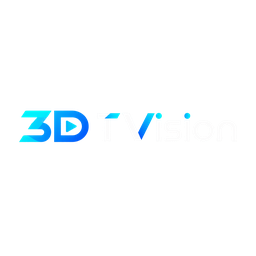

Music you can see.
3D-TVision turns music into real-time 3D visual effects on Windows - in a window, full screen, or behind your desktop icons.
What it does
Your music, or anything playing
Play your own files and folders, or switch to Live and visualize whatever your PC is playing.
15 built-in effects
Each with its own variants and sliders. Save your favourite settings and load them back any time.
Desktop wallpaper
Put the effects behind your desktop icons. Ctrl+Alt+Z or the tray icon brings the window back.
Remote Control
A slim second window with every setting, so the main window can stay clean on another screen.
Layers on top
Background photos and slideshows, a text overlay, a system monitor card and a date & time display.
More effects
3D Effects adds more - three are free to download, the rest sold separately - installed straight from the .zip.
It shows you how - on your own screen
Open Help > How to Use This App. Next to every step of the guide is a ▶ Show me: press it and the app does that step for real, right in its own window - a pointer moves to the control, clicks it, drags the slider or opens the panel, with a caption saying what is happening. It is not a recorded video, so it always matches your screen, your window size and your version. When it ends, or when you press Esc, your own settings, files and window are put back as they were.
Quick Start
Pick a sound source, choose an effect, and tune it - the first five minutes.
Interface Map
Every control on the main window, top to bottom, in the order you meet it.
Features
Twelve cards, one per feature - from the equalizer to desktop wallpaper - each with its own Show me.
Remote Control
Nine cards for the Remote window; its Show me plays on the Remote itself.
Private by design
Sound is analyzed on your computer to drive the visuals. It is never recorded, saved or sent anywhere, and the app has no account, no ads and no tracking. Details in the privacy policy.